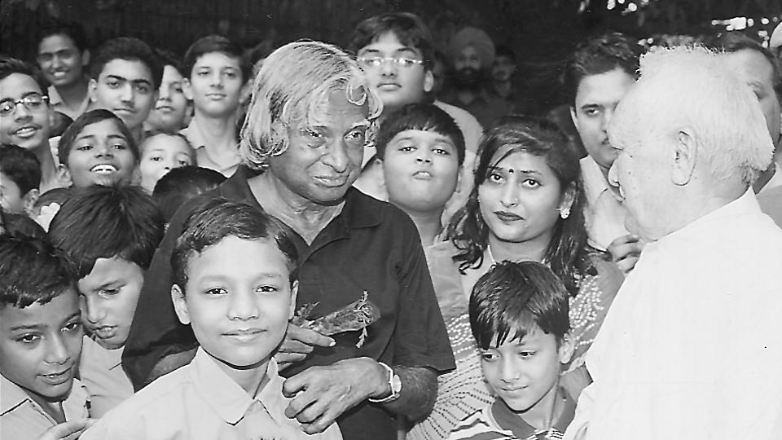

A. P. J. Abdul Kalam
Missile Man of India

Former President Dr. A.P.J. Abdul Kalam interacting with students. Photo: P. Goutham
- 1931 - born in Rameswaram,Tamil Nadu.
- 1954 - graduated in Physics from St. Joseph’s College in Tiruchirappalli, which was then affiliated to the University of Madras.
- 1955 - moved to Madras (now Chennai) and joined the Madras Institute of Technology and studied aerospace engineering.
- 1960 - joined as a scientist in Defence Research and Development Organisation’s Aeronautical Development Establishment.
- 1965 - worked independently in Defence Research and Development Organisation for the first time on an expandable rocket project.
- 1980 - his team was successful in deploying the Rohini satellite near the orbit of the Earth.
- 1981 - received the Padma Bhushan.
- 1970-90 - Dr. Kalam’s efforts in developing the projects on SLV-III and Polar SLV and successful.
- 1990 - was awarded the Padma Vibhushan by the Indian Government for his work with the DRDO and ISRO and as scientific advisor to the Government.
- 1995 - remained the Secretary of the Defence Research and Development Organisation, and also the Chief Scientific Advisor to the Prime Minister
- 1997 - the Indian National Congress conferred him with the Indira Gandhi Award for National Integration.
- 1998 - developed a low-cost Coronary Stent along with Dr. Soma Raju, a cardiologist. And the Government of India presented to him the Veer Savarkar Award.
- 2002-2007 - served as the President of India.
- 2007 -The University of Wolverhampton in UK bestowed on him the Honorary Doctorate of Science .
- 2009 - California Institute of Technology, USA, honoured him with the International von Karman Wings Award.
- 2010 - The University of Waterloo honoured him with the Doctor of Engineering.
- 2010 - became an honorary member of the IEEE.
- 2012 - the Simon Fraser University conferred on him the Doctor of Laws (Honoris Causa).
- 2013 - received the Von Braun Award from National Space Society in recognition of his excellence in the leadership and management of space-related projects.
- 2014 - received an honorary degree in Doctor of Science from Edinburgh University, UK.
- 2015 - The United Nations recognized Dr. Kalam’s birthday as “World Student’s Day”.
- 2015 - dies at the age of 83.
Here's a time line of Dr. A.P.J. Abdul Kalam's life:
“Don’t take rest after your first victory because if you fail in second, more lips are waiting to say that your first victory was just luck.”
--Former President A. P. J. Abdul Kalam